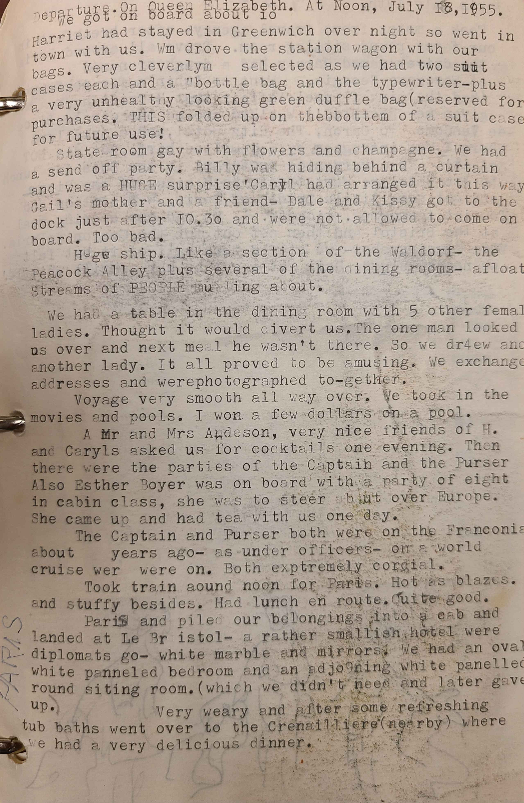

1 Harriet had stayed in Greenwich over night so went in
2 town with us. Wm drove the station wagon with our
3 bags.Very cleverlym selected as we had two suiuit
4 cases each and a "bottle bag and the typewriter-plus
5 a very unhealthy looking green duffle bag (reserved for
6 purchases. THIS folded up on thebbottem of a suit case
7 for future use!
8 State room gay with flowers and champagne. We had
9 a send off party. Billy was hiding behind a curtain
10 and was a HUGE surprise ' Carlyl had arranged it this way
11 Gail's mother and a friend- Dale and Kissy got to the
12 dock just after 10.30 and were not allowed to come on
13 board. Too bad.
14 Huge ship. Like a section of the Waldorf- the
15 Peacock Alley plus several of the dining rooms- afloat
16 Streams of PEOPLE mu ing about.
17 We had a table in the dining room with 5 other femal
18 ladies. Thought it would divert us. The one man looked
19 us over and next meal he wasn't there. So we dr4ewano
20 another lady. It all proved to be amusing. We exchange
21 addresses and werephotographed to-gether.
22 Voyage very smooth all way over. We took in the
23 movies and pools. I won a few dollars on a pool.
24 A Mr and Mrs Andeson, very nice friends of H.
25 and Caryls asked us for cocktails one evening. Then
26 there were the parties of the Captain and the Purser
27 Also Esther Boyer was on board with a party of eight
28 in cabin class, she was to steer about over Europe.
29 She came upand had tea with us one day.
30 The Captain and Purser both were on the Franconia
31 about years ago- as under officers- on a world
32 cruise wer were on. Both extremely cordial.
33 Took train around noon for Paris. Hot as blazes.
34 and stuffy besides. Had lunch en route.Quite good.
35 Parid and piled our belongings into a cab and
36 landed at Le Br istol- a rather smallish hotel were
37 diplomats go- white marble and mirrors. We had an oval
38 white panneled bedroom and an adjo9ning white panelled
39 round sitting room. (which we didn't need and later gave
40 up.)
41 Very weary and after some refreshing
42 tub baths went over to the Crenailliere(nearby) where
43 we had a very delicious dinner.